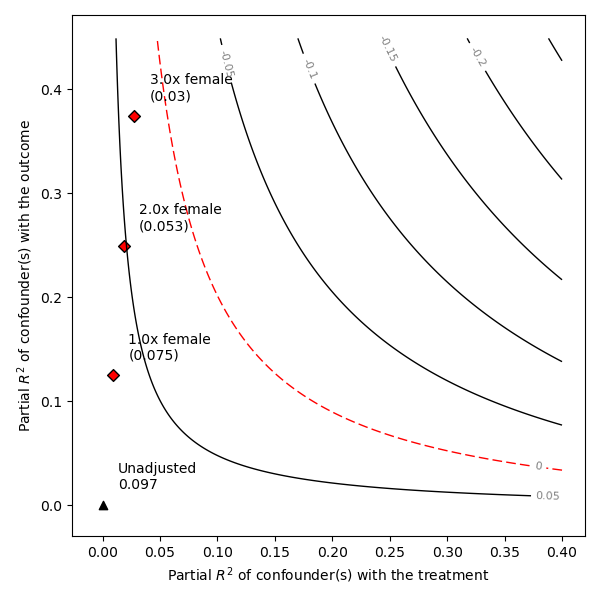
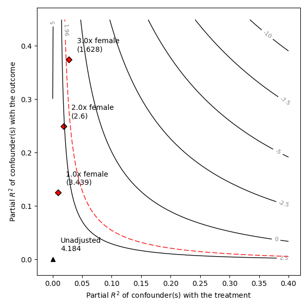
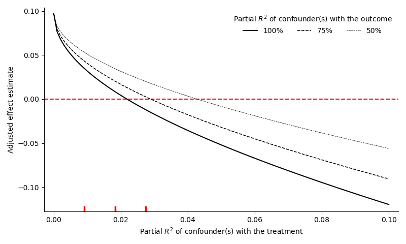

Quickstart
Introduction
In this quickstart, we demonstrate the basic usage of the package by reproducing Section 5 of Cinelli and Hazlett (2020), which estimates the effects of exposure to violence on attitudes towards peace, in Darfur. Throughout this manual, we mainly focus on the code. For detailed explanations, please refer to the original paper.
Violence in Darfur
In 2003 and 2004, the Darfurian government orchestrated a horrific campaign of violence against civilians, killing an estimated two hundred thousand people. In this application, we are interested in answering the following question: did being directly exposed to harm make individuals more “angry,” and thus more likely to ask for revenge, or did it make them more "weary," and thus more likely to ask for peace?
Sensemakr comes with the Darfur dataset, which can be loaded with the command data.load_darfur(). More details about the data can be found in the documentation, as well as in Hazlett (2019) and Cinelli and Hazlett (2020).
# imports Sensemakr
using Sensemakr
# loads darfur data
using DataFrames
darfur = load_darfur();
first(darfur, 5)5 rows × 14 columns
| wouldvote | peacefactor | peace_formerenemies | peace_jjindiv | peace_jjtribes | gos_soldier_execute | directlyharmed | age | farmer_dar | herder_dar | pastvoted | hhsize_darfur | village | female | |
|---|---|---|---|---|---|---|---|---|---|---|---|---|---|---|
| Int64 | Float64 | Int64 | Int64 | Int64 | Int64 | Int64 | Int64 | Int64 | Int64 | Int64 | Int64 | String31 | Int64 | |
| 1 | 0 | 1.0 | 1 | 1 | 1 | 0 | 0 | 30 | 0 | 0 | 1 | 23 | Abdel Khair | 0 |
| 2 | 0 | 0.706831 | 0 | 1 | 1 | 0 | 0 | 20 | 1 | 0 | 1 | 5 | Abdi Dar | 1 |
| 3 | 1 | 0.0 | 0 | 0 | 0 | 1 | 0 | 45 | 1 | 0 | 0 | 15 | Abu Sorog | 0 |
| 4 | 1 | 0.495178 | 1 | 0 | 0 | 0 | 1 | 55 | 0 | 0 | 0 | 9 | Abu Dejaj | 0 |
| 5 | 0 | 0.0 | 0 | 0 | 0 | 1 | 1 | 25 | 1 | 0 | 1 | 7 | Abu Dejaj | 1 |
A natural approach for such problem is to run the following linear regression model, where we regress peacefactor on directlyharmed, further adjusting for village, female as well as other covariates. Here we run this regression using GLM
using GLM
form = @formula(peacefactor ~ directlyharmed + age + farmer_dar + herder_dar + pastvoted + hhsize_darfur + female + village);
fitted_model = lm(form, darfur);The above regression results in the following estimate and standard errors for the coefficient of directlyharmed:
first(coeftable(fitted_model), 2)[2](Name = "directlyharmed", var"Coef." = 0.09731581928495726, var"Std. Error" = 0.023256537809811153, t = 4.184449984808271, var"Pr(>|t|)" = 3.182339959789431e-5, var"Lower 95%" = 0.05166327477010026, var"Upper 95%" = 0.14296836379981426)According to this model, those individual who were directly exposed to harm became on average more “pro-peace,” not less.
Sensitivity Analysis
The causal interpretation of the previous estimate, however, relies on the assumption that village and gender are sufficient for control of confounding—in other words, it requires the assumption of no unobserved confounders. What if is wrong? How strong would these unobserved variables have to be in order to change the original research conclusions? The goal of Sensemakr is precisely that, i.e, to make it easier to understand the impact that omitted variables would have on a regression result.
The main function of the package is the function sensemakr. The sensemakr function defines an object of type sensemakr, performing the most commonly required sensitivity analyses which can then be further explored with the summary and plot methods of the object. This function is mainly a convenience wrapper for other sensitivity functions defined in the package, which can also be called directly, as we detail later in the documentation.
In the code chunk below, we apply the function sensemakr to our OLS model from statsmodel.
darfur_sense = sensemakr(fitted_model, "directlyharmed", benchmark_covariates = "female", kd = [1, 2, 3], ky = [1, 2, 3], q = 1.0, alpha = 0.05, reduce = true);The main arguments of the call are:
model: the OLS model with the outcome regression. In our case, darfur_model.
treatment: the name of the treatment variable. In our case, "directlyharmed".
benchmark_covariates: the names of covariates that will be used to bound the plausible strength of the unobserved confounders. Here, we put "female", which is arguably one of the main determinants of exposure to violence, and also a strong determinant of attitudes towards peace.
kd and ky: these arguments parameterize how many times stronger the confounder is related to the treatment (kd) and to the outcome (ky) in comparison to the observed benchmark covariates (in this case, female). In our example, setting kd = [1, 2, 3] and ky = [1, 2, 3] means we want to investigate the maximum strength of a confounder once, twice, or three times as strong as female (in explaining treatment and outcome variation). If only kd is given, ky will be set equal to kd.
q: fraction of the effect estimate that would have to be explained away to be problematic. Setting q = 1, means that a reduction of 100% of the current effect estimate, that is, a true effect of zero, would be deemed problematic. The default is 1.
alpha: significance level of interest for statistical inference. The default is 0.05.
reduce: should we consider confounders acting towards increasing or reducing the absolute value of the estimate? The default is reduce = true, which means we are considering confounders that pull the estimate towards (or through) zero.
Using the default arguments, one can simplify the previous call to:
darfur_sense = sensemakr(fitted_model, "directlyharmed", benchmark_covariates = "female", kd = [1, 2, 3]);Once we run sensemakr, we can now explore the sensitivity analysis results.
Minimal sensitivity reporting
The print method of Sensemakr provides a quick review of the original (unadjusted) estimates along with three summary sensitivity statistics suited for routine reporting: the partial $R^2$ of the treatment with the outcome, the robustness value ($RV$) required to reduce the estimate entirely to zero (i.e. $q=1$), and the RV beyond which the estimate would no longer be statistically distinguishable from zero at the 0.05 level
print(darfur_sense)Sensitivity Analysis to Unobserved Confounding
Model Formula: hhsize_darfur ~ farmer_dar + herder_dar + female + village + peacefactor + age + directlyharmed + pastvoted
Null hypothesis: q = 1.0 and reduce = true
Unadjusted Estimates of "directlyharmed":
Coef. Estimate: 0.097
Standard Error: 0.023
t-value: 4.184
Sensitivity Statistics:
Partial R2 of treatment with outcome: 0.022
Robustness Value, q = 1.0: 0.139
Robustness Value, q = 1.0 alpha = 0.05: 0.076
The package also provides a function that outputs code for a latex or html table with these results. If used in an interactive environment, such as a Jupyter notebook, the table is also automatically displayed in the notebook.
# html code for minimal reporting tableThese three sensitivity statistics provide a minimal reporting for sensitivity analysis. More precisely:
The robustness value for bringing the point estimate of directlyharmed exactly to zero ($RV_{q=1}$) is 13.9% . This means that unobserved confounders that explain 13.9% of the residual variance both of the treatment and of the outcome are sufficiently strong to explain away all the observed effect. On the other hand, unobserved confounders that do not explain at least 13.9% of the residual variance both of the treatment and of the outcome are not sufficiently strong to do so.
The robustness value for testing the null hypothesis that the coefficient of directlyharmed is zero ($RV_{q=1, \alpha = 0.05}$) falls to 7.6%. This means that unobserved confounders that explain 7.6% of the residual variance both of the treatment and of the outcome are sufficiently strong to bring the lower bound of the confidence interval to zero (at the chosen significance level of 5%). On the other hand, unobserved confounders that do not explain at least 7.6% of the residual variance both of the treatment and of the outcome are not sufficiently strong to do so.
Finally, the partial $R^2$ of directlyharmed with peacefactor means that, in an extreme scenario, in which we assume that unobserved confounders explain all of the left out variance of the outcome, these unobserved confounders would need to explain at least 2.2% of the residual variance of the treatment to fully explain away the observed effect.
The lower corner of the table, further provides bounds on the strength of an unobserved confounder as strong as the observed covariate female, resulting in $R^2_{Y\sim Z\mid X, D} = 12.5\%$ and $R^2_{D\sim Z\mid X} = .9\%$. Since both of those are below the RV of 13.9%, we conclude confounders as strong as female, in explaining treatment and outcome variations, are not sufficiently strong to explain away the observed estimate.
Moreover, the bound of $R^2_{D\sim Z\mid X} = .9\%$ is below the partial 𝑅2 of the treatment with the outcome, $R^2_{Y\sim D\mid X} = 2.2\%$, this means that even an extreme confounder explaining all residual variation of the outcome, and as strongly associated with the treatment as female would not be able to overturn the research conclusions.
The summary function of Sensemakr produces verbose output similar to the text explanations above, so that researchers can directly cite or include such texts in their reports.
summary(darfur_sense)Sensitivity Analysis to Unobserved Confounding
Model Formula: hhsize_darfur ~ farmer_dar + herder_dar + female + village + peacefactor + age + directlyharmed + pastvoted
Null hypothesis: q = 1.0 and reduce = true
-- This means we are considering biases that reduce the absolute value of the current estimate
-- The null hypothesis deemed problematic is H0:tau = 0.0
Unadjusted Estimates of "directlyharmed":
Coef. Estimate: 0.097
Standard Error: 0.023
t-value: 4.184
Sensitivity Statistics:
Partial R2 of treatment with outcome: 0.022
Robustness Value, q = 1.0: 0.139
Robustness Value, q = 1.0 alpha = 0.05: 0.076
Verbal interpretation of sensitivity statistics:
-- Partial R2 of the treatment with the outcome: an extreme confounder (orthogonal to the covariates) that explains 100% of the residual variance of the outcome, would need to explain at least 2.187 % of the residual variance of the treatment to fully account for the observed estimated effect.
-- Robustness Value, q = 1.0: unobserved confounders (orthogonal to the covariates) that of both the treatment and the outcome are strong enough to bring the point estimate to 0.0 (a bias of 100.0% of the original estimate). Conversely, unobserved confounders that do not explain more than 13.878% of the residual variance of both the treatment and the outcome are not strong enough to bring the point estimate to 0.0.
-- Robustness Value,q = 1.0, alpha = 0.05: unobserved confounders (orthogonal to the covariates) that explain more than 7.626% of the residual variance of both the treatment and the outcome are strong enough to bring the estimate to a range where it is no longer 'statistically different' from 0.0 (a bias of 100.0% of the original estimate), at the significance level of alpha = 0.05. Conversely, unobserved confounders that do not explain more than7.626% of the residual varianceof both the treatment and the outcome are not strong enough to bring the estimate to a range where it is no longer 'statistically different' from 0.0, at the significance level of alpha = 0.05.
Bounds on omitted variable bias:
--The table below shows the maximum strength of unobserved confounders with association with the treatment and the outcome bounded by a multiple of the observed explanatory power of the chosen benchmark covariate(s).
3×9 DataFrame
Row │ bound_label r2dz_x r2yz_dx treatment adjusted_estimate adjusted_se adjusted_t adjusted_lower_CI adjusted_upper_CI
│ String Float64 Float64 String Float64 Float64 Float64 Float64 Float64
─────┼─────────────────────────────────────────────────────────────────────────────────────────────────────────────────────────────────────
1 │ 1.0x female 0.00916429 0.124641 directlyharmed 0.0752203 0.0218733 3.4389 0.032283 0.118158
2 │ 2.0x female 0.0183286 0.249324 directlyharmed 0.0529152 0.0203501 2.60025 0.012968 0.0928623
3 │ 3.0x female 0.0274929 0.37405 directlyharmed 0.030396 0.0186701 1.62806 -0.00625328 0.0670453
Sensitivity plot
Using the plot method for sensemakr, we can further refine our sensitivity analysis by visually exploring the whole range of possible estimates that confounders with different strengths could cause.
Let us begin by examining contour plots for the point estimate.
plot(darfur_sense)
The horizontal axis shows the hypothetical residual share of variation of the treatment that unobserved confounding explains, $R^2_{D\sim Z| {\bf X} }$. The vertical axis shows the hypothetical partial $R^2$ of unobserved confounding with the outcome, $R^2_{Y\sim Z| {\bf X}, D}$. The contours show what would be the estimate for directlyharmed that one would have obtained in the full regression model including unobserved confounders with such hypothetical strengths. Note the plot is parameterized in way that hurts our preferred hypothesis, by pulling the estimate towards zero—the direction of the bias was set in the argument reduce = true of sensemakr().
The bounds on the strength of confounding, determined by the parameter kd = [1, 2, 3] in the call for sensemakr(), are also shown in the plot. Note that the plot reveals that the direction of the effect (positive) is robust to confounding once, twice or even three times as strong as the observed covariate female, although in this last case the magnitude of the effect is reduced to a third of the original estimate.
We now examine the sensitivity of the t-value for testing the null hypothesis of zero effect. For this, it suffices to change the option sensitivity_of = "t-value".
plot(darfur_sense, sensitivity_of = "t-value")
The plot reveals that, at the 5% significance level, the null hypothesis of zero effect would still be rejected given confounders once or twice as strong as female. However, by contrast to the point-estimate, accounting for sampling uncertainty now means that the null hypothesis of zero effect would not be rejected with the inclusion of a confounder three times as strong as female.
Sensitivity to extreme scenarios
Sometimes researchers may be better equipped to make plausibility judgments about the strength of determinants of the treatment assignment mechanism, and have less knowledge about the determinants of the outcome. In those cases, sensitivity plots using extreme scenarios are a useful option. These are produced with the option plot_type = "extreme". Here one assumes confounding explains all or some large fraction of the residual variance of the outcome, then vary how strongly such confounding is hypothetically related to the treatment, to see how this affects the resulting point estimate.
plot(darfur_sense, plot_type = "extreme")
References
Cinelli, C. Hazlett, C. (2020) “Making Sense of Sensitivity: Extending Omitted Variable Bias”. Journal of the Royal Statistical Society, Series B (Statistical Methodology).
Hazlett, C. (2019). Angry or Weary? How Violence Impacts Attitudes toward Peace among Darfurian Refugees. Journal of Conflict Resolution.
This page was generated using Literate.jl.